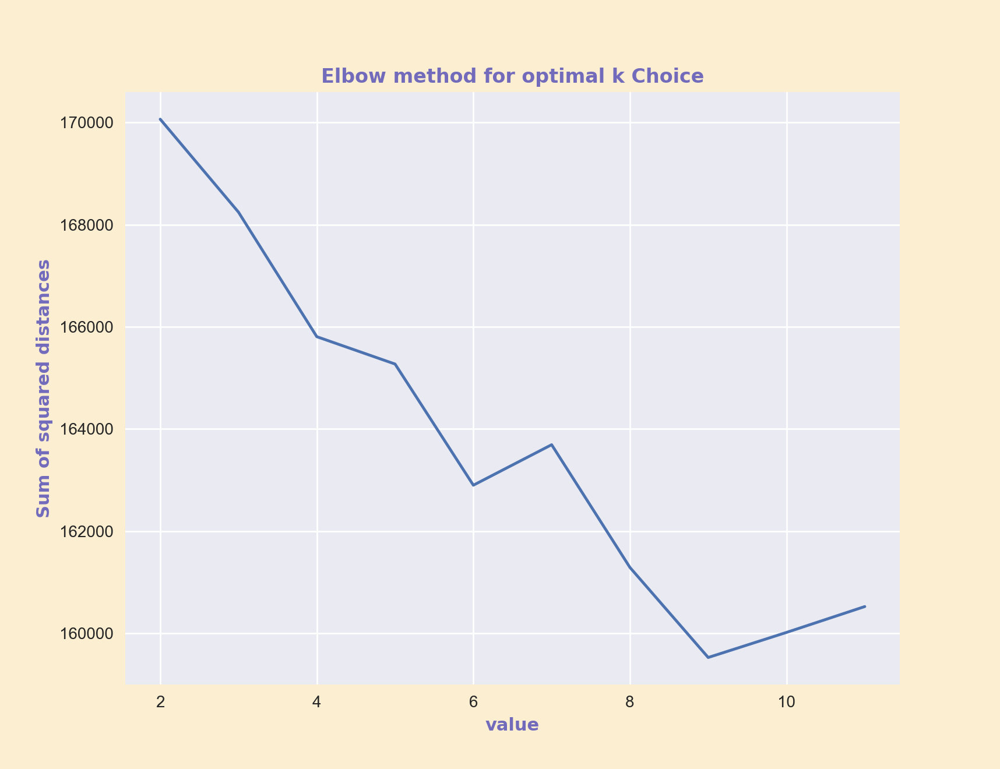

Clustering - Text Data (Python)
This page will go through the process of clustering text data gathered from PubAg website. The text file contains five labelled data - "Diary", "Corn", "Organic Farms", "Wheat", and "Farms". The Python code below demenstrates using CountVectorizer to transform .txt data into numeric dataframe with the frequency of each word appeared in the text file, and the clutering process
(dowonload)
:
